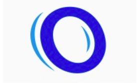

Omnia Workspace
FrontEnd Engineering Intern

- Built and shipped reusable UI components within a production React codebase, improving consistency and development speed across the application.
- Collaborated with fellow interns in a fast-paced startup environment without a dedicated engineering lead, taking ownership of key frontend features and technical decisions.
- Implemented responsive and accessible interfaces by translating evolving product requirements into scalable frontend solutions.
- Contributed to the development of a desktop productivity platform that integrates live web browsers, third-party tools, and OS-level functionality into a unified workspace.
- Supported integration efforts between the React frontend and Electron-based desktop environment to deliver a seamless multi-application workflow experience.
During my time at Omnia Workspace, I :
Tools Used : React, Electron, Azure, GitHub